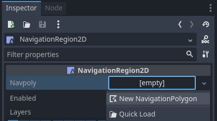
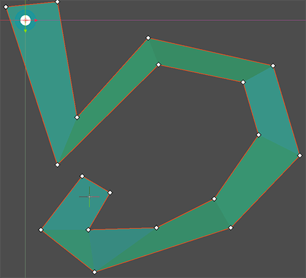
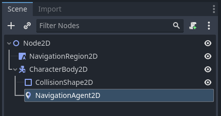

2D navigation overview
Godot provides multiple objects, classes and servers to facilitate grid-based or mesh-based navigation and pathfinding for 2D and 3D games. The following section provides a quick overview over all available navigation related objects in Godot for 2D scenes and their primary use.
Godot provides the following objects and classes for 2D navigation:
- Astar2D
Astar2Dobjects provide an option to find the shortest path in a graph of weighted points.The AStar2D class is best suited for cell-based 2D gameplay that does not require actors to reach any possible position within an area but only predefined, distinct positions.
- AstarGrid2D
AstarGrid2Dis a variant of AStar2D that is specialized for partial 2D grids.AstarGrid2D is simpler to use when applicable because it doesn't require you to manually create points and connect them together.
- NavigationServer2D
NavigationServer2Dprovides a powerful server API to find the shortest path between two positions on an area defined by a navigation mesh.The NavigationServer is best suited for 2D realtime gameplay that does require actors to reach any possible position within a navigation mesh defined area. Mesh-based navigation scales well with large game worlds as a large area can often be defined with a single polygon when it would require many, many grid cells.
The NavigationServer holds different navigation maps that each consist of regions that hold navigation mesh data. Agents can be placed on a map for avoidance calculation. RIDs are used to reference internal maps, regions, and agents when communicating with the server.
- The following NavigationServer RID types are available.
- NavMap RID
Reference to a specific navigation map that holds regions and agents. The map will attempt to join the navigation meshes of the regions by proximity. The map will synchronize regions and agents each physics frame.
- NavRegion RID
Reference to a specific navigation region that can hold navigation mesh data. The region can be enabled / disabled or the use restricted with a navigation layer bitmask.
- NavLink RID
Reference to a specific navigation link that connects two navigation mesh positions over arbitrary distances.
- NavAgent RID
Reference to a specific avoidance agent. The avoidance is specified by a radius value.
- NavObstacle RID
Reference to a specific avoidance obstacle used to affect and constrain the avoidance velocity of agents.
The following scene tree nodes are available as helpers to work with the NavigationServer2D API.
- NavigationRegion2D Node
A Node that holds a NavigationPolygon resource that defines a navigation mesh for the NavigationServer2D.
The region can be enabled / disabled.
The use in pathfinding can be further restricted through the
navigation_layersbitmask.The NavigationServer2D will join the navigation meshes of regions by proximity for a combined navigation mesh.
- NavigationLink2D Node
A Node that connects two positions on navigation meshes over arbitrary distances for pathfinding.
The link can be enabled / disabled.
The link can be made one-way or bidirectional.
The use in pathfinding can be further restricted through the
navigation_layersbitmask.
Links tell the pathfinding that a connection exists and at what cost. The actual agent handling and movement needs to happen in custom scripts.
- NavigationAgent2D Node
A helper Node used to facilitate common NavigationServer2D API calls for pathfinding and avoidance. Use this Node with a Node2D inheriting parent Node.
- NavigationObstacle2D Node
A Node that can be used to affect and constrain the avoidance velocity of avoidance enabled agents. This Node does NOT affect the pathfinding of agents. You need to change the navigation meshes for that instead.
The 2D navigation meshes are defined with the following resources:
- NavigationPolygon Resource
A resource that holds 2D navigation mesh data. It provides polygon drawing tools to allow defining navigation areas inside the Editor as well as at runtime.
The NavigationRegion2D Node uses this resource to define its navigation area.
The NavigationServer2D uses this resource to update the navigation mesh of individual regions.
The TileSet Editor creates and uses this resource internally when defining tile navigation areas.
See also
You can see how 2D navigation works in action using the 2D Navigation Polygon and Grid-based Navigation with AStarGrid2D demo projects.
Setup for 2D scene
The following steps show the basic setup for minimal viable navigation in 2D. It uses the NavigationServer2D and a NavigationAgent2D for path movement.
Add a NavigationRegion2D Node to the scene.
Click on the region node and add a new NavigationPolygon Resource to the region node.

Define the movable navigation area with the NavigationPolygon draw tool. Then click the Bake NavigationPolygon button on the toolbar.

Note
The navigation mesh defines the area where an actor can stand and move with its center. Leave enough margin between the navigation polygon edges and collision objects to not get path following actors repeatedly stuck on collision.
Add a CharacterBody2D node in the scene with a basic collision shape and a sprite or mesh for visuals.
Add a NavigationAgent2D node below the character node.

Add the following script to the CharacterBody2D node. We make sure to set a movement target after the scene has fully loaded and the NavigationServer had time to sync.
extends CharacterBody2D
var movement_speed: float = 200.0
var movement_target_position: Vector2 = Vector2(60.0,180.0)
@onready var navigation_agent: NavigationAgent2D = $NavigationAgent2D
func _ready():
# These values need to be adjusted for the actor's speed
# and the navigation layout.
navigation_agent.path_desired_distance = 4.0
navigation_agent.target_desired_distance = 4.0
# Make sure to not await during _ready.
actor_setup.call_deferred()
func actor_setup():
# Wait for the first physics frame so the NavigationServer can sync.
await get_tree().physics_frame
# Now that the navigation map is no longer empty, set the movement target.
set_movement_target(movement_target_position)
func set_movement_target(movement_target: Vector2):
navigation_agent.target_position = movement_target
func _physics_process(delta):
if navigation_agent.is_navigation_finished():
return
var current_agent_position: Vector2 = global_position
var next_path_position: Vector2 = navigation_agent.get_next_path_position()
velocity = current_agent_position.direction_to(next_path_position) * movement_speed
move_and_slide()
using Godot;
public partial class MyCharacterBody2D : CharacterBody2D
{
private NavigationAgent2D _navigationAgent;
private float _movementSpeed = 200.0f;
private Vector2 _movementTargetPosition = new Vector2(70.0f, 226.0f);
public Vector2 MovementTarget
{
get { return _navigationAgent.TargetPosition; }
set { _navigationAgent.TargetPosition = value; }
}
public override void _Ready()
{
base._Ready();
_navigationAgent = GetNode<NavigationAgent2D>("NavigationAgent2D");
// These values need to be adjusted for the actor's speed
// and the navigation layout.
_navigationAgent.PathDesiredDistance = 4.0f;
_navigationAgent.TargetDesiredDistance = 4.0f;
// Make sure to not await during _Ready.
Callable.From(ActorSetup).CallDeferred();
}
public override void _PhysicsProcess(double delta)
{
base._PhysicsProcess(delta);
if (_navigationAgent.IsNavigationFinished())
{
return;
}
Vector2 currentAgentPosition = GlobalTransform.Origin;
Vector2 nextPathPosition = _navigationAgent.GetNextPathPosition();
Velocity = currentAgentPosition.DirectionTo(nextPathPosition) * _movementSpeed;
MoveAndSlide();
}
private async void ActorSetup()
{
// Wait for the first physics frame so the NavigationServer can sync.
await ToSignal(GetTree(), SceneTree.SignalName.PhysicsFrame);
// Now that the navigation map is no longer empty, set the movement target.
MovementTarget = _movementTargetPosition;
}
}
Note
On the first frame the NavigationServer map has not synchronized region data and any path query will return empty. Wait for the NavigationServer synchronization by awaiting one frame in the script.